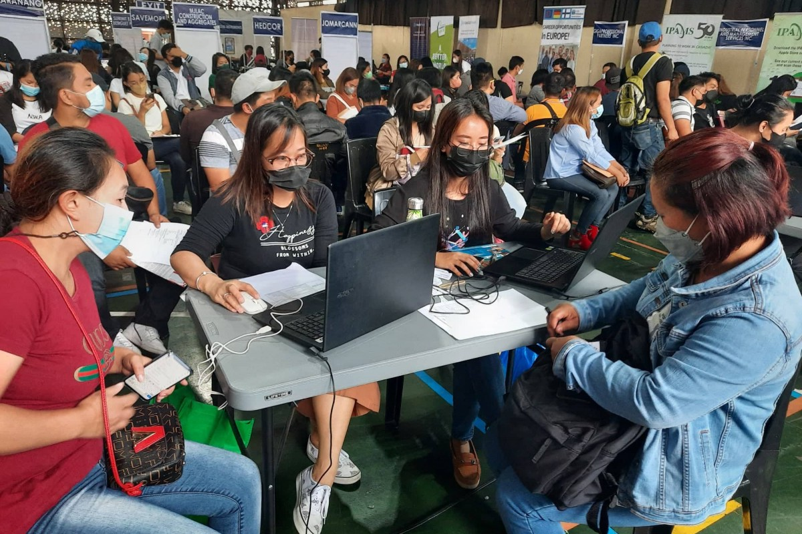

What is Baguio City Known For?

Nestled about 250 kilometers to the north of Manila is the city known for being the
cool getaway from the hot Philippine temperatures. Baguio City is home to towering
pine trees and graceful hillocks, painting a picturesque landscape that captivates
the senses. Most importantly, the colorful town is also home to peaceful, hardworking,
and industrious people from all over the country.
Speaking of its citizens, the people of Baguio look up to their leaders who prioritize
good governance. The City Government continuously ensures that they are providing the
highest quality of services to their citizens through transparency, accountability,
and ethics. Therefore, it is no surprise that the citizens of Baguio are willing to
work for the city government.
Why Do People Want to Work in Baguio City?
There are numerous reasons why people from different regions choose to work in the city
of Pines, with the climate being the most common. Aside from the cool temperatures,
collective Indeed reviews expressed that the overall culture found in the city is
what makes it worth it to work in Baguio. In fact, there have been numerous reviews
that commented on the positive behaviors observed among their colleagues. This is
important because having a favorable workplace will help boost motivation and
involvement. As a result, this will increase job satisfaction and employee retention.
Another notable factor that has compelled people to work in the city is the relatively
low cost of living. Travel Tables reported that Baguio provides a more affordable
living cost in comparison to major Philippine cities. This is one of the top reasons
why the city attracts students and retirees.
Benefits of Working in Baguio City
Being a government employee, in general, offers a lot of benefits compared to those
employed by private establishments. According to
Jobstreet,
there is more stability in government jobs, considering employees will generally
not be affected by changes in the economy. Not only that, but the government
assures their employees health insurance, vacation leaves, and even housing programs.

In order to provide us with a deeper understanding of human resource management
in Baguio City, we conducted an interview with Atty. Laban, who serves as the
department head of the City Human Resource Management Office. According to the
City Government of Baguio's official website,
this office is responsible for planning, developing, and implementing a
comprehensive and balanced City Human Resource development program.
Furthermore, one of the responsibilities of the office includes employee
screening, employee benefits, compensation, and talent management.
When asked about the benefits of working in the public sector, Atty Laban
answered, "First is the security of tenure." According to the
Official Gazette of the Republic of the Philippines,
this is when an employee cannot be terminated from their job unless there is
a valid and approved reason, and this can only occur following the appropriate
procedural steps.
"Once you are in government, your job is secured. Unlike in the private sector,
that when the private sector is not doing well, more or less, they can fire their
employees," Atty Laban continued. He also mentioned that government employees
receive higher pay compared to the private sector. Besides this, retirement is
also another benefit public sector employees receive. "If you are working in
government, then you are assured of pension [...] as long as you have worked for
at least 15 years."
Overall, the climate, relatively low cost of living, job security, certainty of
retirement, and comparatively higher pay make working for the City of Baguio
appealing to many.
Job Opportunities for Government Officials in Baguio City
One way to assess whether an area holds good job opportunities is by looking
at the job market. In general, a lower unemployment rate often signifies a
healthier job market. According to
SunStar,
there has been a positive change in terms of the unemployment rate across
the country as of April 2023. Their statistics show a percentage of 4.5%
unemployed Filipinos, which can be considered a substantial improvement
compared to last year's percentage of 5.7%.
Furthermore, the
Philippine Information Agency
reported that the
unemployment rate in the Cordillera Administrative region is even lower
than the national average of 4.8%. As of January 2023, the region's
unemployment rate stands at 3.3%.
Looking at those figures, one can assume that the pursuit of employment
within the city of Pines might pose a lesser challenge in comparison to
other regions.
How Easy is it to Look for a Job in Baguio City?

When asked about job opportunities in Baguio City, Atty Laban mentioned that
there are numerous job opportunities in both the private and public sectors.
In fact, during the time of the interview, he mentioned that there was an
ongoing job fair being conducted in the Convention Center. Furthermore,
he stated, "Job fairs can happen at least twice a year — one is during May
1, Labor Day, and the other is when there are activities, like Baguio Day."
At the time of the interview, there was an ongoing 2023 World Café of
Opportunities cum National Tech-Voc Day. The event was being held by
the Technical Education and Skills Development Authority (TESDA) in
collaboration with the Department of Labor and Employment (DOLE). The post
uploaded by the
Baguio City Public Information Office's Facebook page
stated that the job vacancies are also open to persons with disabilities.
Furthermore, in the most recent Labor Day job and business fair, the
Department of Labor and Employment
reported a total of 15,784 job openings for local and overseas employment.
Some of the jobs being offered in this event include sales associates,
food and beverage staff, bookkeepers, and more.
With the government's efforts, it can be concluded that the citizens of Baguio
are given many opportunities to work in both the public and private sectors.
Aside from job fairs, there are also other available resources to check the
vacancies in the city government. One popular medium for this purpose is the
various online employment marketplaces, such as JobStreet, Indeed, and Jora.
What is the City of Baguio Looking For When Hiring?
Among the tasks undertaken by the human resource department include making
job postings, reviewing applicants, and scheduling interviews. Moreover,
they take actions and steps to help the city find and secure the most
suitable candidates for a given job vacancy.
According to Atty Laban, the city government is looking for people with
experience and the right education. “We are looking for those who have
the potential to be good workers,” he adds. Although experience is one of
the biggest factors when hiring for the city of Baguio, Atty Laban expressed
that they remain open to hiring fresh graduates. “Of course [...] many fresh
graduates are in the office.” He says.
Most In Demand Industries in Baguio City
A lot of factors affect the demand for job positions. This includes changes
in demographics, government initiatives, global events, and even industry trends.
“As far as the city government is concerned right now, the most in-demand jobs
are IT-related,” stated Atty Laban. He explained, “... because of systems and
because of our engagement with the internet.” He also stated that this demand
in the city government has only been observed in recent years. Accordingly,
“Well, of course, ten years ago is different because we [were] not so reliant
on technology. Although we are still looking for development of systems at the
time. But right now, the use of technology is full-blown; that's why IT
courses are in demand.”
On the contrary, Atty Laban says that jobs related to general courses are not
as well sought after compared to IT-related jobs. “The government, just like
in the private sector, is now preferring skill-related [jobs]. Again, this is
driven by technology.”
Furthermore, some of the potential IT-related careers you can find within the
government include technical support representatives, IT security analysts, IT
project engineers, and more.
The demand for IT-related jobs cannot only be observed in Baguio. According
to
FutureLearn Local,
the Philippines has a high demand for jobs within the technology industry,
making it one of the most sought-after sectors.
In a 2019 article by
Yondu,
data from the Monster Employment Index, which measures online job posting
trends on Monster.com, found that the IT industry depicts a quarterly
growth rate of 6%. This includes job opportunities in the IT, Telecom/ISP,
and BPO/ITES fields. Furthermore, it was found that the sector is considered
one of the leading performers in terms of online recruitment demand.
Not only that, but the boost in the need for such careers is a phenomenon
worldwide. The
Cambridge College of Healthcare & Technology
explained that this can be attributed to technology's dynamic and
swiftly expanding realm.
Overall, considering that technology is only going to advance further from here,
we can anticipate an even greater demand for IT-related roles in the upcoming
years.
Click
here
to learn more about the most in demand jobs in the Philippines from the years
2019-2023.